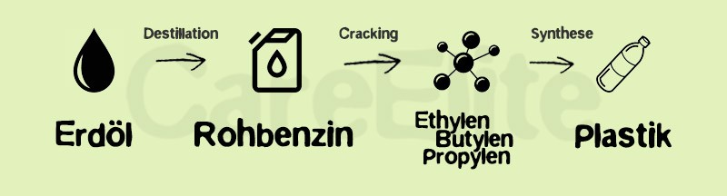

Was ist Plastik überhaupt?
Plastik nennt man heutzutage alle möglichen Kunststoffe. Es besteht aus Erdöl welches mit Rohbenzin destilliert wird und darauf hin mit dem Cracking-Verfahren aufgespaltet und durch Synthese Kunstoff hergestellt wird
- 1950 wurden noch 1,5 Tonnen pro Jahr produziert, heute sind es 400 Millionen Tonnen
- Jährlich verenden etwa 1.000.000 Seevögel und 135.000 Meeressäuger durch den Kontakt Plastikmüll
- Eine Tube Zahnpasta kann bis zu 10% Mikroplastik enthalten
- Es gibt richtige Müllwirbel im Meer welche aus Plastik bestehen. Der größte darunter ist der Great Pacific Garbage Patch